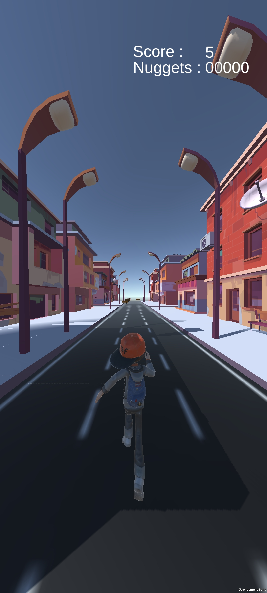
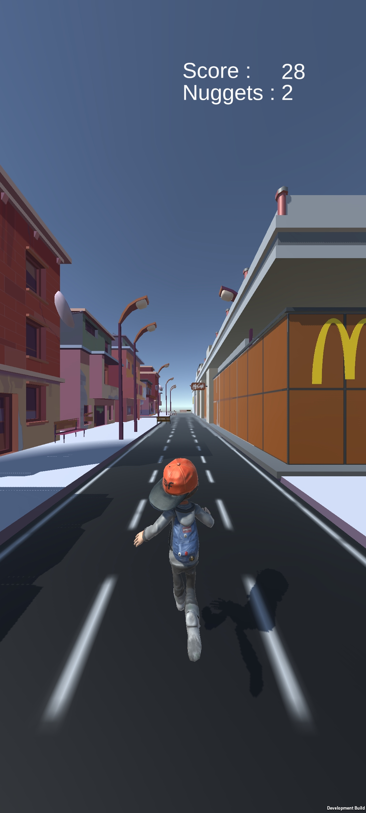

Mcdo Surfer
Contexte du Projet
Ce jeu a été réalisé durant le cours de **Unity en 3ème année de BUT informatique**. L'objectif était de maîtriser les fondamentaux du moteur de jeu Unity à travers la création d'un runner.
Gameplay & Développement
Type Runner
Un jeu simple inspiré de classiques comme Subway Surfer, idéal pour débuter sur Unity.
Mode Infini
Le joueur peut progresser aussi longtemps qu'il évite les obstacles, offrant une rejouabilité infinie.
Collectables
Intégration d'un système de score basé sur la collecte d'objets durant la course.
Physique & Obstacles
Gestion des collisions et de la réactivité du personnage face aux éléments du décor.
Captures d'écran du jeu

